제안 = 승인된 계획(카드 격자·2.5:1 배너·파스텔 배너·얼굴 64·이름 줄 오른쪽 팔로우 버튼·본문 두 줄·승인 시간과 선물 버튼 제외)과 docs/design/tokens.md 값. 문구·색 토큰·뱃지는 그대로.
각 화면 폴더: before.html(실제 화면을 2026-10-17 에 정적으로 저장) · after.html(같은 원본 + proposal.css + 카드 안 배치 이동) · proposal.css
logo-mark.png 가 옅은 하늘색 네모 바탕이 있는 그림이라 바탕만 투명하게 뺀 사본(assets/logo-mark-clear.png)을 썼다./creators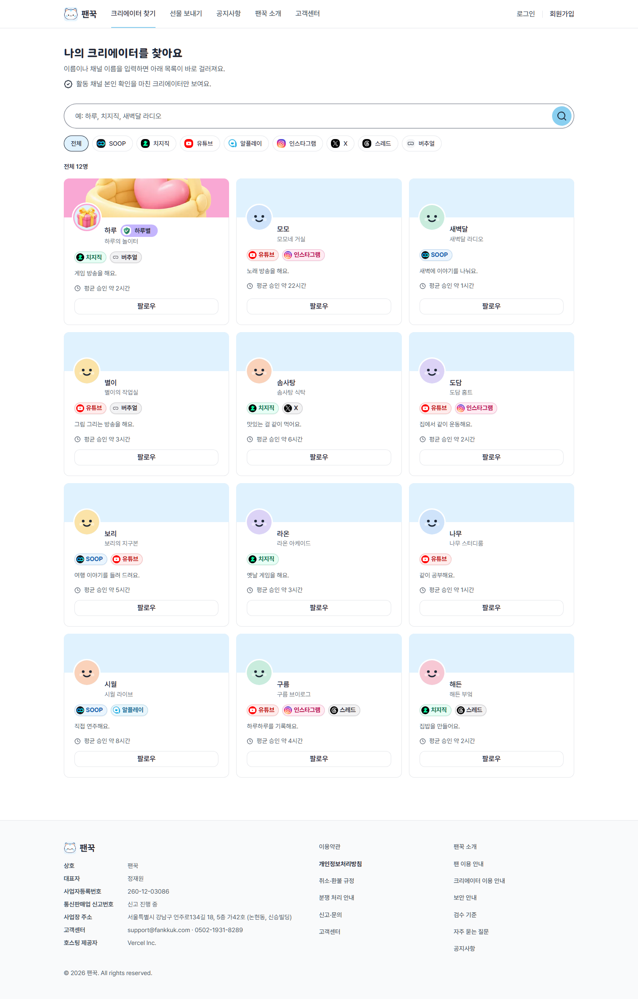
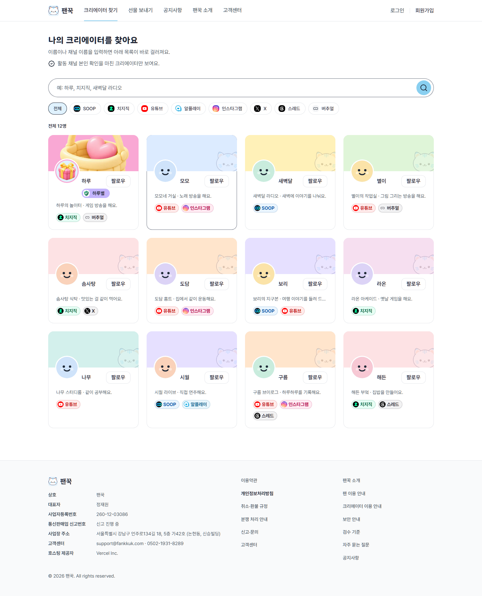
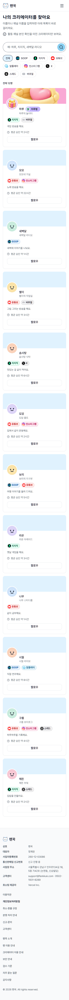
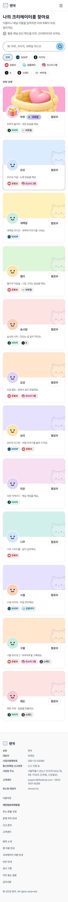
/creators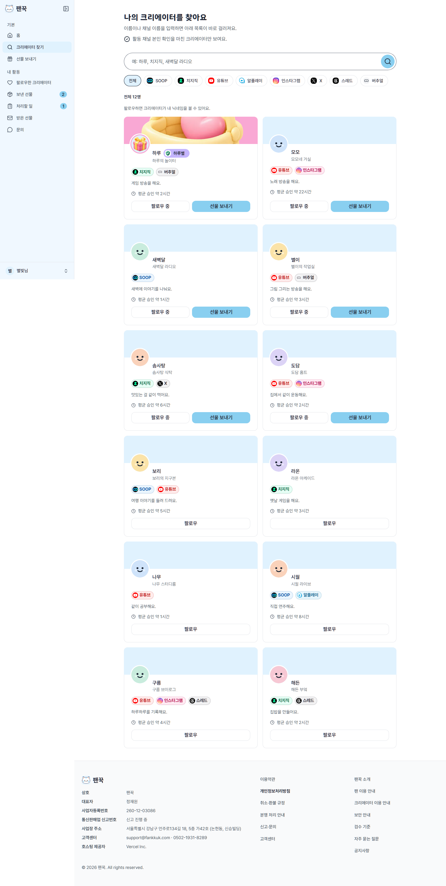
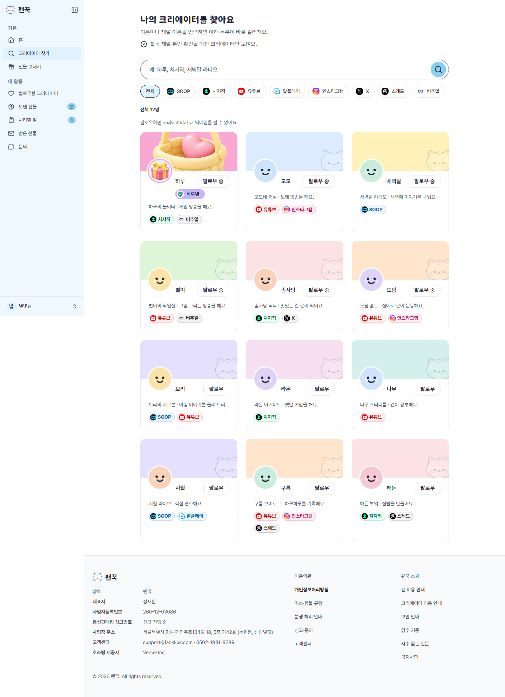
검색칸에 없는 이름을 넣은 상태. 빈 상태 상자는 이미 토큰 값(안쪽 24·반경 16·글자 20/16)이라 바뀐 것이 없고, 검색칸·칩 여백만 달라진다.
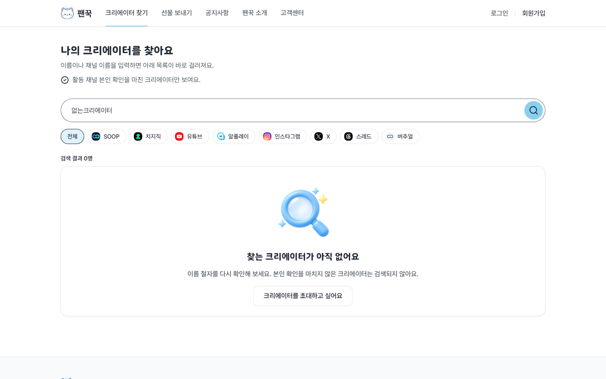
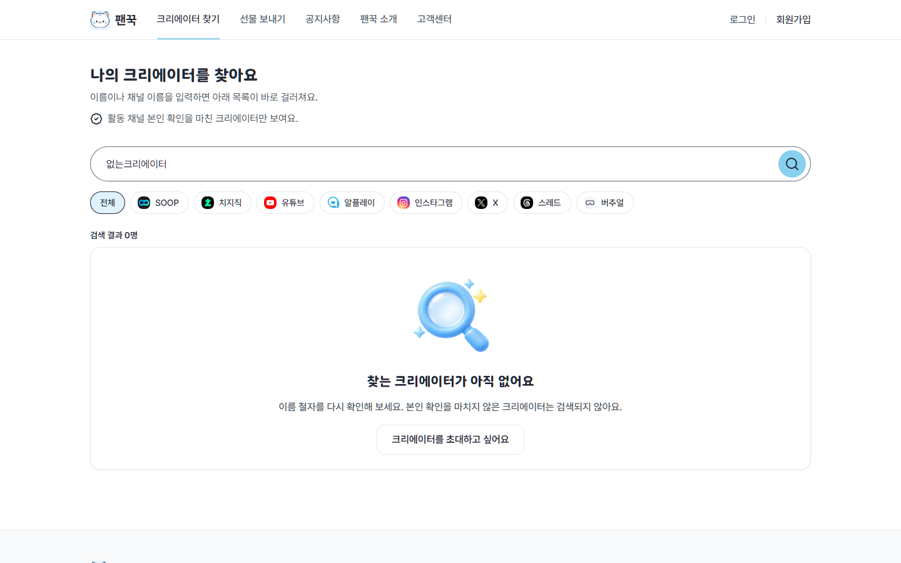
/creator/profile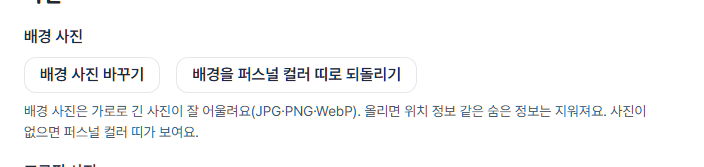
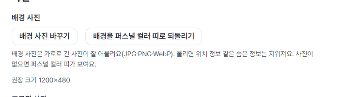
시험 사진은 1200×480(2.5:1). 위아래 가장자리 띠와 양옆 끝 막대가 모두 보이면 잘림이 0 이다. 치지직 1920×480 은 양옆 360 씩이 잘리고 가운데 1200 이 그대로 보인다(어둡게 칠한 곳이 잘리는 부분).
여백: 사진↔이름 16→8, 이름↔칩 24→8, 칩↔소개 24→16, 소개↔인사말 8, 인사말↔버튼 24→16, 버튼↔안내 8, 아래 안쪽 48→32(휴대폰 32→24). 머리 카드 높이(2.5:1 기준) 742→686(PC), 499→451(390).
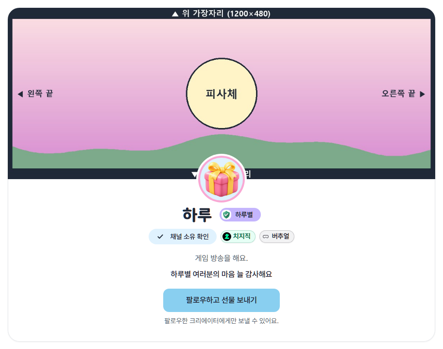
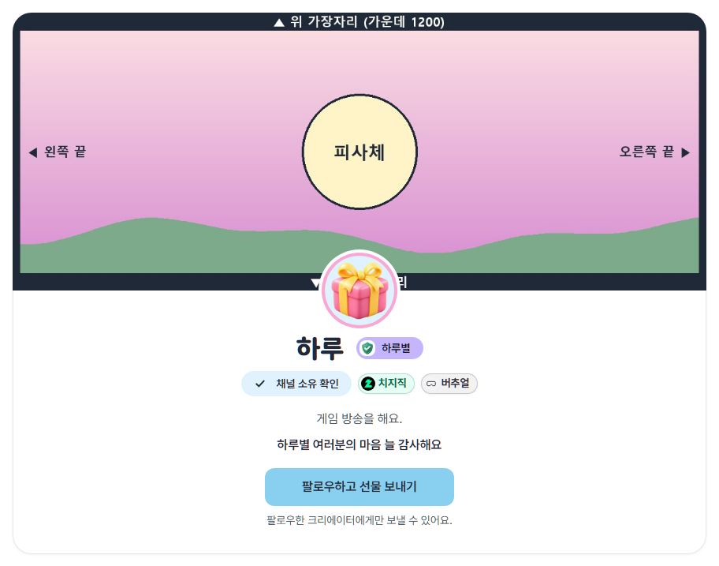
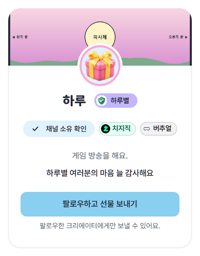
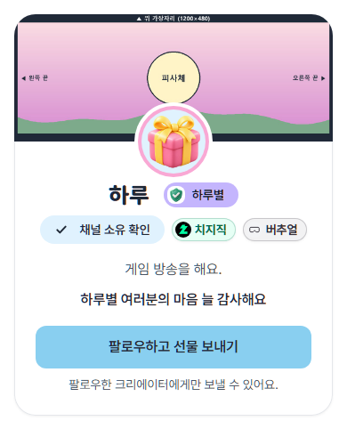
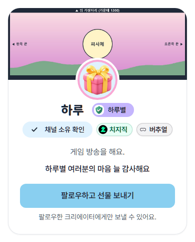
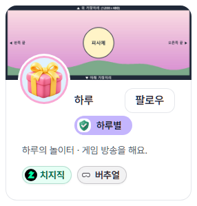
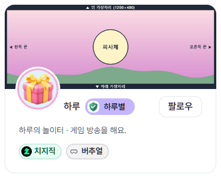
/creator/settings지금도 입력 아래에 추천 색 8개 줄이 있다(진한 남색·자주 포함). 제안은 그 줄을 파스텔 8색으로 바꿔 입력 위로 올린 모습이고, 하늘색(#DCEBFF)을 누른 뒤 입력칸에 값이 들어간 상태다. 직접 입력은 그대로.
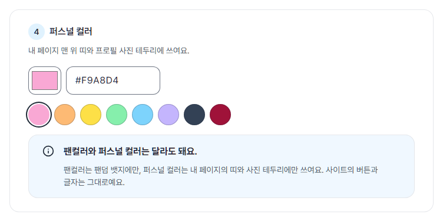
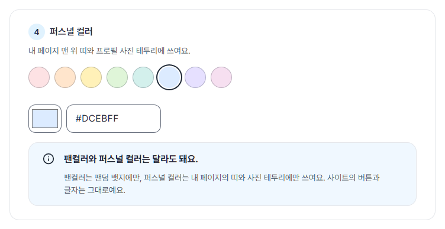